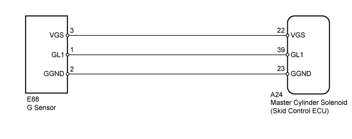

DTC C1336/98 Zero Point Calibration of Acceleration Sensor Undone |
| DTC Code | DTC Detection Condition | Trouble Area |
| C1336/98 |
|
|

| 1.CHECK SENSOR INSTALLATION |
Check that the G sensor is installed properly.
| Result | Proceed to | |
| OK | A | |
| NG | for Automatic Transmission | B |
| for Manual Transmission | C | |
|
| ||||
|
| ||||
| A | |
| 2.PERFORM ZERO POINT CALIBRATION OF G SENSOR |
Perform the zero point calibration of the G sensor (Click here).
| NEXT | |
| 3.RECONFIRM DTC |
Clear the DTCs (Click here).
Check if the same DTCs are output (Click here).
| Result | Proceed to | |
| DTC is not output | A | |
| DTC is output | LHD | B |
| RHD | C | |
|
| ||||
|
| ||||
| A | ||
| ||